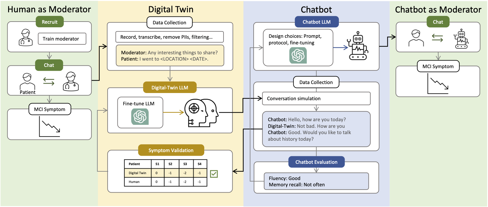

Development Pipeline
The language functionality lies at the core of the proposed conversational chatbot and therefore should be validated before deployment. In this section, we provide an end-to-end pipeline that evaluates and iterates the LLM-based design. The crux of the pipeline is an interactive test environment in which we can probe the capabilities of the chatbot. As outlined in the below figure, the pipeline includes 6 steps. (1) We curate data of conversations between patients and moderators. (2) Then, we utilize the data to create digital twins for each patient. (3) We design the chatbot based on pre-trained LLMs. (4) We simulate conversations between the digital twin and the chatbot. (5) We evaluate the digital twins by examining the symptom similarity between the conversations by digital twins and those by human patients. (6) With the simulated conversations, we evaluate if the chatbot can realize the design principles. Based on the evaluation results, we can iterate or rank design choices in step (3). Finally, we deploy our chatbot in conversations with humans.
The development process of building a chatbot for MCI patients. We collect patients' conversation data from human clinical trials and build digital twins to simulate conversations with the designed chatbot.